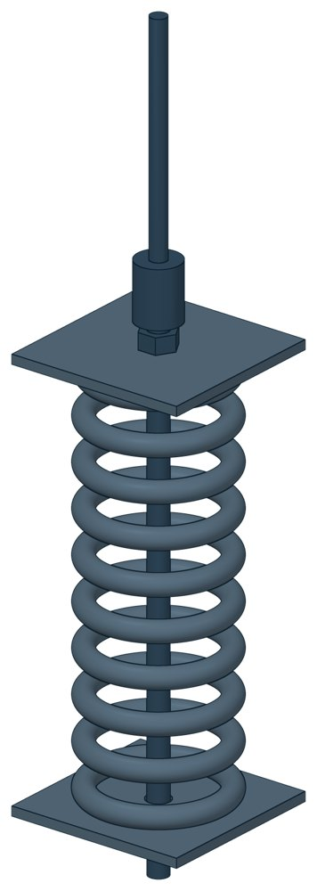

Опоры жесткие подвесные пружинные Т26
Серия 4.903-10 вып. 6. Допускаемая нагрузка — до 58,45 кН, масса 13,2–186,2 кг.

- Документ
- Серия 4.903-10 вып. 6
- Исполнений
- 20
- Допускаемая нагрузка
- до 5960 кгс
- Масса
- 13,2–186,2 кг
- 3D-модели
- у всех исполнений (условные: общий вид по габаритам)
Таблица исполнений Т26
| Обозначение | Код ПРОМБУРГ | Допускаемая нагрузкакгс | Ширина Вмм | Длина Lмм | Номм | Нмм | dмм | d1мм | Массакг | 3D |
|---|---|---|---|---|---|---|---|---|---|---|
| Т26.01 | ПБ-Т26-0000-1 | 534 | 150 | 225 | 308 | 520 | М12 | М12 | 13,2 | 3D |
| Т26.02 | ПБ-Т26-0000-2 | 816 | 150 | 225 | 327 | 565 | М16 | М12 | 15,8 | 3D |
| Т26.03 | ПБ-Т26-0000-3 | 1190 | 170 | 255 | 346 | 615 | М16 | М16 | 22,7 | 3D |
| Т26.04 | ПБ-Т26-0000-4 | 1666 | 170 | 255 | 365 | 615 | М16 | М16 | 25 | 3D |
| Т26.05 | ПБ-Т26-0000-5 | 2005 | 170 | 255 | 414 | 705 | М20 | М16 | 32,6 | 3D |
| Т26.06 | ПБ-Т26-0000-6 | 2686 | 200 | 310 | 399 | 705 | М20 | М16 | 43,7 | 3D |
| Т26.07 | ПБ-Т26-0000-7 | 3325 | 210 | 310 | 507 | 870 | М24 | М20 | 65,7 | 3D |
| Т26.08 | ПБ-Т26-0000-8 | 4080 | 210 | 310 | 528 | 870 | М24 | М20 | 71,1 | 3D |
| Т26.09 | ПБ-Т26-0000-9 | 4955 | 210 | 340 | 549 | 940 | М3О | М24 | 85,1 | 3D |
| Т26.10 | ПБ-Т26-0000-10 | 5960 | 250 | 370 | 502 | 910 | МЗО | М24 | 105,2 | 3D |
| Т26.11 | ПБ-Т26-0000-11 | 534 | 150 | 225 | 308 | 850 | М12 | М12 | 23 | 3D |
| Т26.12 | ПБ-Т26-0000-12 | 816 | 150 | 225 | 327 | 905 | М16 | М12 | 27,9 | 3D |
| Т26.13 | ПБ-Т26-0000-13 | 1190 | 170 | 255 | 346 | 995 | М16 | М16 | 39,5 | 3D |
| Т26.14 | ПБ-Т26-0000-14 | 1665 | 170 | 255 | 365 | 995 | М16 | М16 | 44,1 | 3D |
| Т26.15 | ПБ-Т26-0000-15 | 2005 | 170 | 255 | 414 | 1135 | М20 | М16 | 57,4 | 3D |
| Т26.16 | ПБ-Т26-0000-16 | 2686 | 200 | 310 | 399 | 1135 | М20 | М16 | 77,2 | 3D |
| Т26.17 | ПБ-Т26-0000-17 | 3325 | 210 | 310 | 507 | 1420 | М24 | М20 | 117,7 | 3D |
| Т26.18 | ПБ-Т26-0000-18 | 4080 | 210 | 310 | 528 | 1420 | М24 | М20 | 128,5 | 3D |
| Т26.19 | ПБ-Т26-0000-19 | 4955 | 210 | 340 | 549 | 1520 | М30 | М24 | 151,8 | 3D |
| Т26.20 | ПБ-Т26-0000-20 | 5960 | 250 | 380 | 502 | 1440 | М30 | М24 | 186,2 | 3D |
Чтобы заказать, сообщите обозначение и код ПРОМБУРГ: +7 (499) 325-51-35, promburg@yandex.ru.
Нормативные документы
- Серия 4.903-10 вып. 6 Изделия и детали трубопроводов для тепловых сетей. Выпуск 6. Опоры трубопроводов подвесные (жесткие и пружинные) — документ, по которому изготавливается изделие — Не действует с 01.01.1997. Заменён: Серия 5.903-13 вып. 6-95. Изделие изготавливается по прежнему обозначению.
Связанные позиции
- Соседний тип: Т27 — Опоры жесткие подвесные пружинные, блоки
- Соседний тип: Т42 — Разгружающие устройства для блоков пружин
Другие типы раздела
Подвески и блоки пружинные (Т26…Т42)
- Опоры жесткие подвесные пружинные, блоки Т27
- Опоры пружинные подвесные Т28
- Опоры пружинные подвесные Т29
- Опоры пружинные подвесные Т41
- Разгружающие устройства для блоков пружин Т42
Частые вопросы
По какому диаметру подбирать — Dн или Ду?
По наружному диаметру трубы Dн: именно он стоит в таблицах серии. Ду — условный проход, округлённая величина: Ду 100 соответствует Dн 108. В заявке указывайте Dн и толщину стенки трубы.
В старом проекте нагрузка в тс, а здесь в кН. Как сравнить?
Серия 4.903-10 даёт нагрузки в тонна-силах, серия 5.903-13 — в килоньютонах. 1 тс = 9,81 кН, то есть 10 тс — это около 98 кН. В таблицах каталога переключатель единиц пересчитывает значения.
Из какой стали изготавливаются опоры?
По рабочим чертежам серии листовые детали — Ст3сп5 ГОСТ 14637-89, хомуты из круга — сталь 20 ГОСТ 1050-88. Для районов с низкой расчётной температурой воздуха применяется низколегированная сталь, в том числе 09Г2С; размеры опор при этом не меняются. В заявке укажите расчётную температуру наружного воздуха.
Почему часть поверхностей опоры не окрашена?
Поверхности под приварку к трубе и к несущей конструкции оставляют без краски, иначе шов получится некачественным. Их консервируют смазкой, которую снимают перед сваркой.
Что указать в заявке, чтобы получить цену без уточнений?
Обозначение с номером исполнения или код ПБ, количество, Dн и стенку трубы, расчётную температуру наружного воздуха, покрытие, город доставки и желаемый срок. Кнопка «В заявку» в таблице собирает спецификацию, которую можно выгрузить в Excel или отправить письмом.